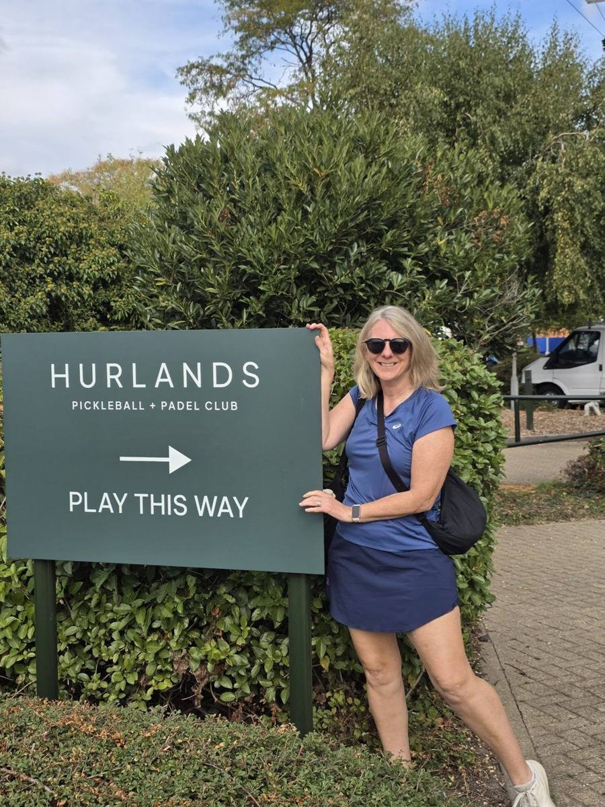

Hampshire was our last UK stop before heading back to the Algarve. We played three very different setups: a purpose-built indoor club at Hurlands, advanced open play at Dinks in Chandler's Ford, and a PickleB tournament at the Hampshire Court Hotel — enough to see where a travelling 3.5–4.0 player can find a competitive game in the south of England.
Guide checked: October 2026 · Last played: October 2026

Hurlands opened in February 2026 on the Farnham Trading Estate, right on the Hampshire–Surrey border. It's a purpose-built indoor club with nine dedicated pickleball courts alongside padel, run on a pay-and-play basis with no membership required — a similar dedicated-indoor setup to Peak Pickleball in Sheffield.
We booked a private court for our own games, then joined the Drills & Play advanced session — 90 minutes of structured drills followed by competitive games.
The courts are the best we've played on anywhere in the UK, there's a great café area to sit between sessions, and several excellent coaches are based at the club.
Our take: a fabulous venue — the only downside is private court hire, which is expensive at £28/hour.
We filmed our game against Jane & Neill Lawson-Smith at Hurlands and ran it through PBVision to see what the footage showed beyond the scoreline.
The fundamentals held up: every serve and every third shot was legal, and 62% of Dave's shots were graded excellent. The model's one flag was speed-ups — none of the rallies where Dave sped the ball up ended in a won point, so that's the shot to pick more carefully next time.
Watch the full PBVision breakdown →| Court quality | ★★★★★ |
| Quality of games | ★★★★★ |
| Ease of joining | ★★★★★ |
| Competitive level | ★★★★★ |
| Value | ★★★★☆ |
| Wanderers rating | 9/10 |
Would we go back? Definitely. Hurlands has the best courts we've played on in the UK, and the Drills & Play advanced session is an easy way in as a visitor — structured drills first, then competitive games, with pay-and-play booking and no membership needed. The one thing that costs it a star on value is private court hire at £28/hour.
A dedicated indoor pickleball centre on Omega Enterprise Park in Chandler's Ford, with 7 indoor courts. We joined the advanced open play session — two hours of games for £12, the best value of anything we played in Hampshire.
PickleB runs its tournament series at the Hampshire Court Hotel's tennis centre in Chineham, near Basingstoke, setting up 19 pickleball courts plus a streamed show court across five tennis courts. Divisions run by skill (3.0 up to 4.5+) and age (18+, 50+, 60+), with doubles, mixed, singles and team events. We played one of their tournaments here — an easy way to guarantee competitive matches at your own level.
Farnham, Chandler's Ford and Basingstoke are spread across the county — around 30–45 minutes' drive apart. Dinks has free on-site parking.
Both Hurlands (Drills & Play) and Dinks run advanced-level sessions, which is where a visiting 3.5+ player will find the best games.
PickleB runs a multi-event series at the Hampshire Court Hotel with divisions by skill and age — enter a 3.5 or 4.0 bracket for guaranteed competitive matches, as we did at the ReBALLution Cup in Rota.
Private court hire at Hurlands is £28/hour, while Drills & Play is £17 for 90 minutes. If you want to work on your game, the club also has some excellent coaches.
Hampshire doesn't have one big hub, but between a new purpose-built club at Hurlands, well-priced advanced open play at Dinks and a regular tournament series at the Hampshire Court Hotel, there's competitive pickleball within reach wherever you're based. Hurlands is the standout — the best courts we've played on in the UK, with a great café and excellent coaching on site. If you're putting together a wider UK trip, our Sheffield, Leeds and Wrexham guides are good stops to compare against.